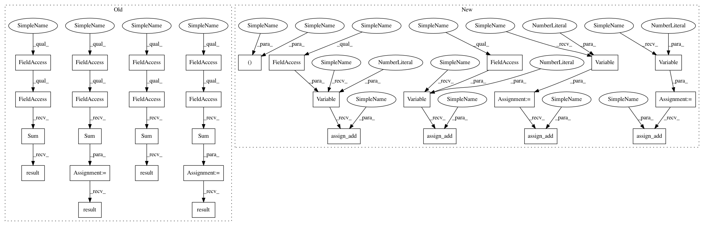

f4b78d3de601d21dad76b9d339033ff133cb7976,baseline/tf/lm/training/eager.py,LanguageModelTrainerEagerTf,train,#LanguageModelTrainerEagerTf#Any#Any#Any#,82
Before Change
SET_TRAIN_FLAG(True)
epoch_loss = tf.keras.metrics.Sum()
epoch_toks = tf.keras.metrics.Sum()
start = time.time()
nstep_loss = tf.keras.metrics.Sum()
nstep_div = tf.keras.metrics.Sum()
self.nstep_start = time.time()
def _train_step_no_state(inputs):
Replicated training step.
features, y = inputs
loss = self.optimizer.update(self.model, features, y)
toks = tf.cast(self._num_toks(y), tf.float32)
report_loss = loss * toks
epoch_loss.update_state(report_loss)
nstep_loss.update_state(report_loss)
epoch_toks.update_state(toks)
nstep_div.update_state(toks)
def _train_step_with_state(inputs, hidden):
Replicated training step.
features, y = inputs
loss, hidden = self.optimizer.update_with_hidden(self.model, hidden, features, y)
toks = tf.cast(self._num_toks(y), tf.float32)
report_loss = loss * toks
epoch_loss.update_state(report_loss)
nstep_loss.update_state(report_loss)
epoch_toks.update_state(toks)
nstep_div.update_state(toks)
return hidden
if get_version(tf) >= 2:
_train_step_with_state = tf.function(_train_step_with_state)
_train_step_no_state = tf.function(_train_step_no_state)
h = None
for inputs in ts:
if self.model.requires_state:
h = _train_step_with_state(inputs, h)
else:
_train_step_no_state(inputs)
step = self.optimizer.global_step.numpy() + 1
if step % self.nsteps == 0:
metrics = self.calc_metrics(nstep_loss.result().numpy(), nstep_div.result().numpy())
self.report(
step, metrics, self.nstep_start,
"Train", "STEP", reporting_fns, self.nsteps
)
nstep_loss.reset_states()
nstep_div.reset_states()
self.nstep_start = time.time()
epoch_loss = epoch_loss.result().numpy()
epoch_toks = epoch_toks.result().numpy()
metrics = self.calc_metrics(epoch_loss, epoch_toks)
self.train_epochs += 1
After Change
SET_TRAIN_FLAG(True)
epoch_loss = tf.Variable(0.0)
epoch_div = tf.Variable(0, dtype=tf.int32)
nstep_loss = tf.Variable(0.0)
nstep_div = tf.Variable(0, dtype=tf.int32)
self.nstep_start = time.time()
start = time.time()
def _train_step_no_state(inputs):
Replicated training step.
features, y = inputs
loss = self.optimizer.update(self.model, features, y)
toks = self._num_toks(y)
report_loss = loss * tf.cast(toks, tf.float32)
return report_loss, toks
def _train_step_with_state(inputs, hidden):
Replicated training step.
features, y = inputs
loss, hidden = self.optimizer.update_with_hidden(self.model, hidden, features, y)
toks = tf.cast(self._num_toks(y), tf.float32)
report_loss = loss * toks
return hidden, report_loss, toks
if get_version(tf) >= 2:
_train_step_with_state = tf.function(_train_step_with_state)
_train_step_no_state = tf.function(_train_step_no_state)
h = None
for inputs in ts:
if self.model.requires_state:
h, step_report_loss, step_toks = _train_step_with_state(inputs, h)
else:
step_report_loss, step_toks = _train_step_no_state(inputs)
epoch_loss.assign_add(step_report_loss)
nstep_loss.assign_add(step_report_loss)
epoch_div.assign_add(step_toks)
nstep_div.assign_add(step_toks)
step = self.optimizer.global_step.numpy() + 1
if step % self.nsteps == 0:
metrics = self.calc_metrics(nstep_loss.numpy(), nstep_div.numpy())
In pattern: SUPERPATTERN
Frequency: 4
Non-data size: 31
Instances
Project Name: dpressel/mead-baseline
Commit Name: f4b78d3de601d21dad76b9d339033ff133cb7976
Time: 2020-04-06
Author: dpressel@gmail.com
File Name: baseline/tf/lm/training/eager.py
Class Name: LanguageModelTrainerEagerTf
Method Name: train
Project Name: dpressel/mead-baseline
Commit Name: f4b78d3de601d21dad76b9d339033ff133cb7976
Time: 2020-04-06
Author: dpressel@gmail.com
File Name: baseline/tf/seq2seq/training/eager.py
Class Name: Seq2SeqTrainerEagerTf
Method Name: train
Project Name: dpressel/mead-baseline
Commit Name: f4b78d3de601d21dad76b9d339033ff133cb7976
Time: 2020-04-06
Author: dpressel@gmail.com
File Name: baseline/tf/lm/training/eager.py
Class Name: LanguageModelTrainerEagerTf
Method Name: train
Project Name: dpressel/mead-baseline
Commit Name: f4b78d3de601d21dad76b9d339033ff133cb7976
Time: 2020-04-06
Author: dpressel@gmail.com
File Name: baseline/tf/classify/training/eager.py
Class Name: ClassifyTrainerEagerTf
Method Name: _train
Project Name: dpressel/mead-baseline
Commit Name: f4b78d3de601d21dad76b9d339033ff133cb7976
Time: 2020-04-06
Author: dpressel@gmail.com
File Name: baseline/tf/tagger/training/eager.py
Class Name: TaggerTrainerEagerTf
Method Name: _train